포용 사회의 도시 디자인
포용 사회의 도시 디자인
- 이태겸 · 이현성
우리의 도시, 어떻게 계획되고 변해 왔는가
전세계 인구의 대부분은 도시에 산다. 유럽연합 공동연구센터(Joint Research Research Centre, JRC)의 ‘인간 행성지도(Atlas of the Human Planet)’에 의하면 그 수는 55억명에 이른다. 세계 인구의 4분의 3에 해당하는 수치이다. 우리나라의 경우, 2021년 주민등록 상 총인구인 5,164만 명 중 91.8%인 4,740만 명이 국토면적의 16.7%를 차지하는 도시지역에 거주하고 있다. 이처럼 도시는 현대인의 삶의 터전으로서, 도시공간의 질은 삶의 질을 결정하는 데도 영향을 미치고 있다. 살기 좋은 도시는 어떤 곳이어야 하는가에 대한 끊임없는 탐구와 논의가 이뤄지고 이유도, 인간의 삶이 도시와 불가분의 관계에 있기 때문일 것이다.
포용사회를 위한 도시디자인 전략을 살펴보기에 앞서, 우리가 살고 있는 도시가 어떤 체계와 방법론에 의해 만들어지고 변화해왔는지에 대한 이해가 필요하다. 이를 위해 20세기 도시계획의 흐름을 간략히 살펴보고자 한다.
근대 도시계획의 위상과 한계
20세기 도시는 합리와 효율을 추구하는 근대도시계획을 중심으로 빠르게 발전했다. 1900년대 초 이후 영향력이 커진 도시기능주의자에 의해 과학적 데이터 분석과 효율적 관리에 기반한 합리적 종합계획으로 도시문제가 다뤄진다. 그들은 도시는 낭만주의적 아름다움보다 사회적 효용과 경제적 효용성이 높게 계획되어야 한다고 주장하였다. 종합적 도시계획에 따라 도시를 여러 개의 지구(Zone)으로 나누어 용도·용적율·건폐율·층고 등을 제한하는 조닝(Zoning)은 바로 근대 기능주의의 물리적 표현이라고 할 수 있다.
바야흐로 20세기는 인간의 이성과 도구적 합리성으로 보다 나은 세상을 만들 수 있다는 생각에 입각한 합리적이고 종합적인 도시계획의 전성기였다. 제2차 세계대전 이후 전쟁으로 폐허가 된 도시를 재건하고, 유입되는 많은 인구를 수용하기 위한 도시계획으로써 기능주의에 기반한 합리적 도시계획의 기여는 크다. 급속한 도시화로 인한 주택, 도시기반시설, 환경과 위생 등의 도시가 직면한 상황을 일정 부분 해결하기도 하였다.
용도별로 분리된 획일적이고 표준화된 도시계획 기법은 다양한 도시문제를 효율적으로 해결할 수 있는 방식으로써 현대 도시계획에서 주도적인 위상을 가지고 있었다. 그러나 기능주의에 따른 용도분리는 일과 거주, 여가 장소를 분리시켰고, 이에 따라 교통량 증가, 도심 공동화 현상 등 근대도시이론에서 예상하지 못한 문제들이 발생했다. 도시의 급속한 확산과 효율성에 기반한 도시개발은 인간 소외, 범죄 증가, 도시의 유지관리 비용 증가 등 또 다른 사회문제의 주요 원인으로 비판받게 된다.
뉴어바니즘의 목표와 한계
현대까지 많은 지지와 공감을 얻고 있는 제인 제이콥스(Jane Jacobs, 1916~2006)는 『미국 대도시의 죽음과 삶(The Death and Life of Great American Cities, 1961)』에서 무제한적인 도시의 확장을 신랄하게 비판하였다. 도시기능주의자들은 도시의 질서정연한 미관을 만드는 데만 관심이 있으며, 도시의 내재적이고 기능적인 질서인 도시생태계로서의 작동 기제를 외면하고 있다는 것이다.
제인 제이콥스의 영향을 받은 덴마크 건축가인 얀 겔(Jan Gehl, 1936~ ) 또한 기능주의를 물질적 측면을 지향하는 도시계획이라고 비판하며, 사람들이 편안하고 편리하게 이용할 수 있도록 건물 사이의 외부공간 및 공공공간에 대한 적극적 개선을 주장하였다. 그는 저서 『삶이 있는 도시디자인(Life Between Buildings, 1971)』에서는 기능주의자의 도시계획에 의해 옥외공간에서 인간적 배려가 사라지는 것에 대한 안타까움을 이야기하고 있다.
기능주의자들은 건축물이나 혹은 건축물이 갖는 심리적, 사회적 측면에 대해서는 언급하지 않았다. 이와 같은 관심의 부족은 공공장소에서도 마찬가지로 나타났다. 예를 들면 건축물 디자인은 놀이의 활동, 접촉의 방식, 만남의 가능성 등에 영향을 줄 수 있었음에도 불구하고 이 같은 점은 고려되지 않았다. 기능주의는 분명히 물질적인 측면을 지향하는 계획 이데올로기였다. 이 이데올로기의 영향으로 인해 새롭게 건설된 도시와 주택단지에서는 거리와 광장 등이 현저하게 사라져 갔다.
인간의 역사를 통틀어 주거지를 살펴보면, 거리와 광장은 도시의 중심부로서 사람들이 모이고 만나는 기능을 수행하며 형성되어 왔다. 그러나 기능주의의 출현으로 인해 거리와 광장은 한마디로 쓸모없는 공간으로 남게 되었다. 그 대신 이들은 도로, 통행로와 끝없는 잔디밭으로 바뀌어 갔다.
-얀 겔, 삶이 있는 도시 디자인
이러한 비판에 대한 반성으로 근대 도시계획의 한계와 문제를 반성하며 뉴 어바니즘(New Urbanism)이 대두된다. 뉴 어바니즘은 제인 제이콥스와 얀 겔 등이 제시한 복합성, 다양성, 유기성과 같은 도시의 긍정적 특성에 기반하여, 인간 척도와 지역성 회복에 주안점을 두고 있다. 물리적 변화를 통한 공동체를 형성을 목표로 하고 있으며, 보행친화성, 상호 연결성, 복합용도 및 다양성, 지속가능성 등을 추구한다. 그럼에도 여전히 도시는 ‘경제성장 지상주의’에 따른 발전을 위한 개발을 벗어날 수 없었고, 불확실한 뉴 어바니즘 방법론의 불확실한 성과는 뉴 어바니즘의 한계로 남아있다.
21세기의 지속가능한 도시
지속가능발전목표
21세기를 맞이하며 국제사회는 빈곤 및 질병 퇴치 등을 목표로 한 새천년발전목표(Millennium Development Goals, MDGs)를 발표하였다. MDGs는 괄목할만한 인도적 성과들과 함께 지역 간 불균형, 계층 간 불균형 등의 숙제를 남겼다. 2015년 국제사회는 Post-MDGs에 대한 논의 끝에, 2030년까지 국제사회가 나아가야 할 총 17개 목표와 169개 세부 목표로 구성된 지속가능발전목표(Sustainable Development Goals, SDGs)에 합의하였다.
SDGs에서는 포용성, 형평성과 지속가능성, 보편성을 크게 강화하였다. 특히 모든 목표에 ‘지속가능성’ 목표가 직간접적으로 포함되어 있으며, 17개의 항목은 포용적 경제성장, 평화롭고 정의로운 사회, 지구 생태계 보전이라는 목표로 상호연계되어 있다.
우리나라도 세계적인 흐름에 발맞춰 “국가지속가능발전목표(K-SDGs:Korean Sustainable Development Goals)”를 공식 명칭을 정하고, ‘모두를 포용하는 지속가능국가’를 비전으로 삼았다. 우리나라는 그 간의 외형적 성장에도 불구하고, 2021년 기준 OECD 삶의 질 지수는 37개국 중 35위이다. 2019년 30위, 2017년 29위, 2014년 25위에 비하면 계속 후퇴하고 있다. 이런 상황 하에서 K-SDGs는 2030년까지 달성해야 할 국제사회의 보편적 가치와 목표를 담아 17개 분야, 122개 세부목표 및 214개 지표를 구성하였다. 이를 통해 ‘체감할 수 있는 국민 삶의 변화’와 포용국가로의 전진을 위한 토대를 제공하는 것을 목표로 하고 있다. 또한 2021-2040년의 지속가능발전 실행계획을 담은 '제 4차 지속가능발전 기본계획'에서도 ‘사람’을 가장 앞에 두고, ‘사람이 사람답게 살 수 있는 포용사회’를 제 1전략으로 삼고 있다.
상호연결된 17개의 지속가능발전목표 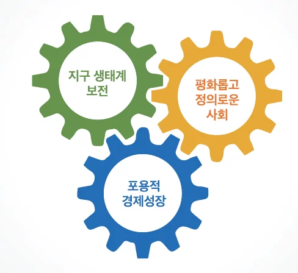 |
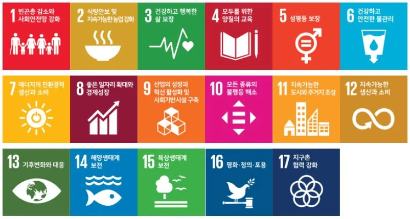 K-SDGs(국가지속가능발전목표) 119개 목표와 236개 지표 |
K-SDGs 비전 및 전략 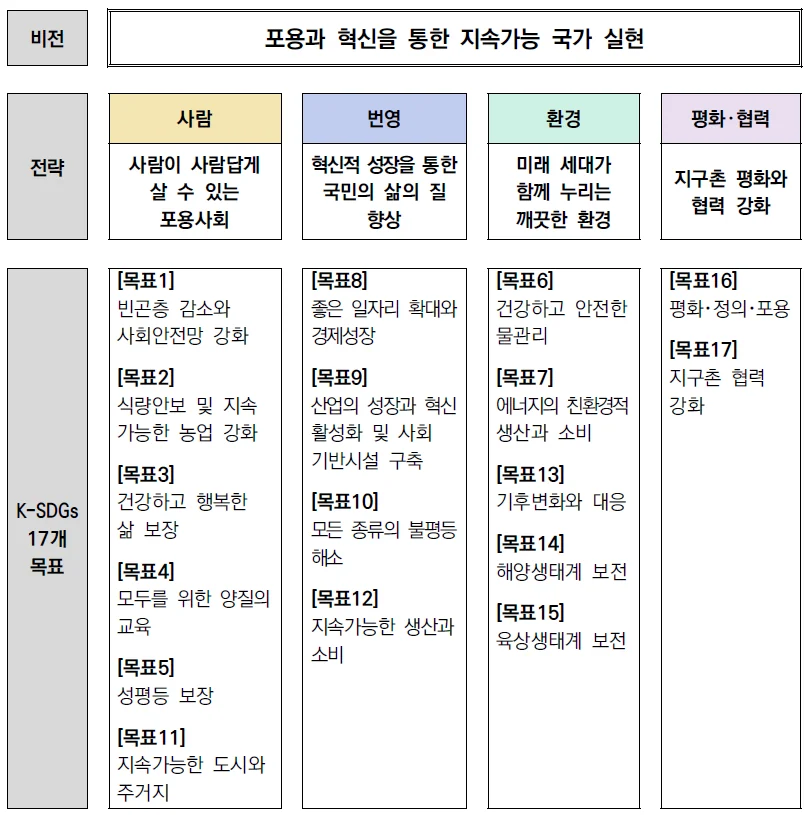 |
|
우리가 살아가는 도시는 물리적으로는 여전히 근현대 도시계획의 영향력 아래에 있다. 그러나 기존의 도시계획이 가진 다양한 문제와 한계를 인지하고, 미래 사회환경 변화를 고려하여, 지속가능성은 도시디자인의 중요한 지향점이 되었다. SDGs에서도 11번째 목표로 ‘포용적이고 안전하며 회복력 있는 지속가능한 도시와 거주지 조성’을 제시하며, 이를 위해 통합적이고 지속가능한 도시계획 수립 역량을 키워야 한다는 내용을 담고 있다. 인구의 90%가 도시인인 한국인에게 SDG 11은 명백한 ‘도시 의제’이자 목표로서 중요한 위상을 지니고 있다.
지속가능한 회복탄력적 도시
21세기 도시공간을 다루는 모든 계획과 사업에서 ‘지속가능성(sustainability)’은 기본값(default)이다. 그런데 지속가능은 전통적 생태학에서 제시한 평형성(equilibrium)에 기반한 개념으로, 근본적으로 이상적이고 지속가능한 ‘형태’에 관심을 두고 있다. 이 때문에 인간의 삶의 터전인 복잡다양하고 역동적이며 변화예측이 어려운 도시에 적용하기에 적당하지 않은 개념이다. 실제로 지속가능성은 도시계획과 실행의 측면에서 반영하기에 모호하고 실행하기 까다로운 개념으로 취급된다.
이에 최근에는 외부로부터의 변화와 충격에 대응력과 회복력을 높이는 리질리언스(resilience)가 지속가능성의 실천 전략으로 주목받고 있다. resilience는 'To jump back'의 뜻을 가진 라틴어 'resilire', 'salire'에서 유래한다. 어원상 '회복 혹은 극복할 수 있는 능력'을 뜻하며, 기본적으로는 어려움으로부터 회복하는 능력(the ability to recover from adversity)인 ‘회복탄력성’으로 해석된다.
회복탄력성은 본래 심리학에서 주로 사용되었는데, 자연 재해나 테러 등의 큰 재난을 비롯한 예측불가한 사회의 변화를 겪으면서 사회가 그 이전의 상태를 회복할 수 있는 역량을 가리키는 개념으로 확장되었다. 리질리언스 사고의 핵심은 “세상일은 변한다”라는 단순한 개념이다. 제인 제이콥스는 도시생태계는 주어진 시점에서 어느 도시와 인접한 종속 지역 내에서 활동하는 물리-경제-윤리적 과정들로 구성된다고 하였다. 우리가 사는 그리고 앞으로 살아갈 유기적인 생태계인 도시는 이러한 과정을 반복하며 끊임없이 변한다. 자연과 도시의 두 생태계 모두 생태계 유지를 위해서 다양성을 필요로하며, 시간이 흐르면서 다양성은 유기적으로 발달하게 된다. 다양한 구성요소들은 복잡한 방식으로 상호의존하고 두 생태계의 생명체와 생활에 다양성의 틈새가 많아질수록 생명체를 수용하는 힘도 커진다.
즉, 인간이라는 생명체가 살아가는 도시가 많은 다양성을 포용할 수 있을 때 도시의 회복탄력성과 지속가능성도 높아진다. 그리고 도시가 필요로하는 ‘사회적 회복성’은 도시가 지닌 취약도와 적응력의 상호작용 즉, 회복 역량이 얼마나 갖추어져 있는지에 따라서 결정된다. 도시의 취약도는 그 도시에 내재되어 있는 많은 사회문제들에 의해 영향을 받고, 도시의 회복역량이란, 이러한 문제들을 극복하고 해결할 수 있는 도시의 자원과 시스템을 의미한다.
이렇듯 도시의 다양성과 변화를 인지하고 환경, 사회, 경제, 문화적 변화를 예측하여 계획하거나 예측 불가능한 변화에도 유연하게 대응할 수 있는 능력이 리질리언스이다. 따라서 회복탄력적(리질리언스) 도시는 시공간 차원에 걸쳐 바람직한 기능으로 빠르게 유지 또는 복구되며, 변화에 적응력이 높고, 미래의 적응 능력을 제한하는 시스템을 빠르게 전환시킬 수 있는 능력을 지닌 도시로 정의된다. 즉, 유기적인 도시생태계를 기반으로, 스트레스 및 위험으로부터 지속적인 전환을 추구하는 과정의 도시이다. 도시가 직면한 문제는 전환(transitation) 과정을 통해 회복탄력적 도시로 구현될 수 있으며, 이를 통해 도시의 지속가능성을 실현할 수 있다.
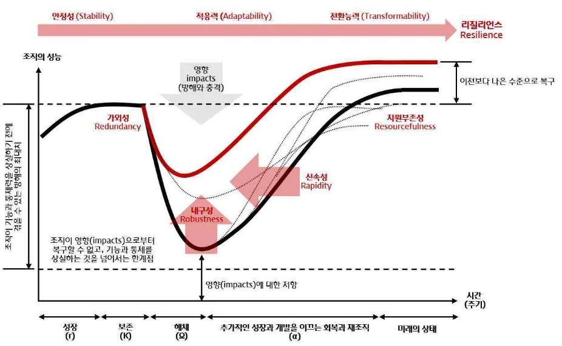 |
| 리질리언스 시티의 적응주기 그래프 |
3. 포용도시를 위한 도시디자인
‘공생’의 가치를 담은, 포용 도시
포용 디자인에 앞서 포용 도시에 대해 먼저 살펴보자. 포용도시는 “모든 사람이 재산, 성별, 연령, 인종, 종교에 상관없이 도시가 제공해야 할 기회들에 생산적이고 긍정적으로 참여할 수 있는 권능을 가지고 있는 장소”가 제공되는 도시로 정의된다. 포용도시 비전은 2016년 10월, 에콰도르공화국(República del Ecuador)의 수도인 키토(Quito)에서 개최된 UN-HabitatIII 회의에서 ‘모두를 위한 도시(Cities for All)’라는 슬로건으로 제시되었다. 이후 우리나라를 비롯한 전 세계의 많은 국가와 도시가 포용을 새로운 성장 모델이나 국가정책의 핵심 의제로 삼고 있다. 회의 결과에서 채택된 ‘새로운 도시 의제(New Urban Agenda)’에서도 도시의 포용성(inclusivity)을 중요하게 강조하고 있다. 이는 포용성의 철학을 도시라는 지리적 스케일에서 실천하고자 한 것이다. 포용적 성장을 통해 서로 함께 사는 것이 도시의 ‘어젠다’가 된 것이다.
도시비전은 미래 도시의 모습을 예고하는 기능뿐만 아니라 현재 도시의 문제를 진단하는 기준이 되기도 한다. 미래도시를 논하는 이 시점에서 국제사회가 ‘포용도시’에 주목하는 이유를 현대도시가 지닌 핵심적 문제가 ‘사회적 배제’에서 찾을 수 있다. ‘배제’에 대응하는 개념으로서 ‘포용’은 21세기 도시가 지향해야 하는 가치를 담고 있고 있기에, 미래 도시를 논하는 이 시점에 시의적절한 개념이기 때문이다.
포용은 각자의 형편에서 더 나은 삶의 질을 누릴 수 있도록 해주고, 물질적 및 시스템적인 환경을 개선하는 것이다. 또한 창의적이고 합리적이며, 불필요한 노력과 마찰을 줄여주는 사회를 만들고, 기업과 비즈니스는 새로운 영역으로의 확장과 혁신을 통해 더 많은 이윤창출에 기여한다. 이러한 변화에는 특정 계층의 희생이 전제되지 않기에 제로섬이 아니라 국가, 기업, 개인 모두가 혜택을 얻는 윈+윈+윈이 되는 것이며, “포용국가=살기 좋은 국가”라는 등식이 성립할 수 있게 해준다.
포용도시의 실현 수단, 포용 디자인
미래의 다양한 변화에 유기적으로 대응할 수 있는 공간이 많아진다면, 도시공간의 회복탄력성이 커지고 지속가능성 또한 증가할 것이다. 다양한 사회 변화와 구성원의 요구를 포용하며 활용성이 높아진다면, 도시의 효용성과 가치 모두 증가할 것이기 때문이다. 현재의 단일 용도로 사용되던 도시공간에서 이러한 요구와 변화를 모두 수용하기는 점점 더 어려워지고 있다. 이런 상황에서 용도분할보다 유연하고 복합적인 공간, 장기간의 변화를 예측하여 대응할 수 있는 도시공간의 필요성은 점점 더 커지고 있다.
지금 우리는 그 어느 때보다도 문제해결의 전략이 필요한 시대에 살고 있다. 막대한 사회적 비용을 지출하게 되는 사회문제들에 대해 사후 대처보다는 사전에 예방하고 개선하기 위한 정책의 패러다임 전환이 시급하다. 디자인은 이를 개선할 수 있는 주요 해결책 중 하나로, 문제해결의 도구로써 공공 뿐만 아니라 혁신을 추구하는 많은 기관과 기업들이 이미 활용하고 있는 핵심역량이자 프로세스이기도 하다.
회복탄력성이 높은 도시공간 확보를 위해서는 이에 적합한 도시계획 및 디자인 기법도 필요할 것이다. 그렇다면 회복탄력적 도시를 만들어가기 위해서 취해야 할 도시계획 및 디자인 방법은 무엇일까? 도시의 지속가능성을 위해 리질리언스 관점으로 도시를 계획한다면, 리질리언스를 높이기 위한 도시 디자인 전략은 무엇일까?
2018년 12월 링크드인은 2019년 50개의 빅아이디어를 발표했는데 그중 디자인 관련 주제가 하나 있었다. 바로 ‘포용디자인이 주류가 될 것이다’(Inclusive design will go mainstream)였다. 그가 기술이 바꿀 세상을 말하면서 '포용디자인'을 언급한 것이다. AI기술을 통해 포용디자인이 주류로 주목받게 될 수 있을 것이라는 예측이다.
최근 문화예술계에서 장애인의 편리한 문화향유와 장애예술가의 활발한 예술창작활동을 위해 물리적·심리적 장벽을 없애 ‘무장애(배리어 프리)’ 사업들이 다양하게 진행되고 있음
급격한 출생인구의 감소와 노동인구의 노령화로 선진국의 길목에서 잠재적 성장력이 갈수록 줄어들고 있는 길목+도시의 효용성을 극대화하려는 기능주의 도시계획 -> 도시공간의 다양성 수용이 중요해짐
유니버셜 공간에서 나아간 세대 간 활동까지 포용한 초세대 디자인에 대한 논의가 필요한 이유, 포용 도시 디자인을 통도시민 모두가 이용할 수 있는 ‘열린’ 공공공간은 도시의 포용성을 높이고 통합성을 제고한다.
포용디자인으로 번역되는 인클루시브 디자인과 유니버설 디자인은 장애를 가진 사람들이나노약자들만을 위한 좁은 개념이 아니다. 물론 장애를 가졌거나 고령의 사람들이 받는 제약을 해소해 주기 위한 무장애 환경구현을 위한 디자인(Barrier-free Design)에서 출발한 유니버설디자인은 장애를 돕기 위한 디자인에서 발전된 개념이라고 볼 수 있다. 하지만 인클루시브 디자인은 그 명칭에서 의미하고 있듯이 모든 사람들이 가지고 있는 다양성을 배려한 디자인과 시스템을 만들어서 보다 더 포용성이 높은 사회를 만들기 위한 역할을 의미한다.
극소수의 사용자를 위한 디자인에서부터 모두를 위한 디자인까지 선택할 수 있는 범위가 있다고 할 때, 지금까지 우리는 비용편익이 가장 높은 ‘평균을 위한 디자인’을 해왔다. 평균을 위한 세상에서는 평균치에 해당되는 사용자만 각광받는다. 평균치를 조금이라도 벗어나면 소외된다. 노약자, 장애인, 어린이들은 소외되는 쪽에 속한다.
‘혁신적 포용국가를 실현하는 수단으로써 포용디자인’은 포용국가로 전환하고자 하는 지금, 국정 전반에 필요한 디자인의 역할을 의미한다. 이제 산업을 촉진하는 도구로서만이 아니라 생각하는 방법과 문화를 바꾸는 주체로서, 사회적 가치를 만드는 주체로서 디자인이 역할을 할 수 있게 모두가 관심을 가져야 한다. 정부는 안전, 범죄예방, 지역재생, 에너지, 공유, 일자리, 복지 모든 정부의 정책에 디자인이 모든 국민을 배려하는 포용의 국정 철학으로 고려 될 수 있도록 국가디자인 전략을 수립하고 이를 추진해가야 할 것이다.
지금부터 도시의 회복탄력성을 높이기 위한 도시계획 및 디자인 전술로서 택티컬 어바니즘을, 도시의 다양성을 수용하여 포용력을 높이기 위한 도시 디자인 전략으로써 초세대 디자인을 제안하고자 한다. 택티컬 어바니즘은 용도로 분리된 현대도시를 개선하는 실천적이고 임시적인 도시계획으로 잘 알려져 있어 간략히 소개하고자 한다. 이후 다룰 도시공간 설계 전략으로서의 초세대 디자인은 본 글에서 시험적으로 제안하는 개념이다. 초세대 디자인 전략의 확산을 위해 필요성, 디자인 원칙을 상세히 논하여, 더 많은 논의의 장을 열고자 하였다.
4. 디자인 전술 : 도시의 유연한 변화를 이끄는 택티컬 어바니즘
택티컬 어바니즘의 등장
고밀도로 확장된 도시는 빠른 변화를 이끌어내기가 쉽지 않다. 이에 따라 새로운 지역에 대한 계획과 개발보다는 변화하는 사회환경을 고려하여 기존 도시를 복합적으로 활용하거나 재생할 수 있는 방법론이 관심을 끌고 있다. 복합적 계획과 이용에 대응한 새로운 계획방식의 하나로, 최근 택티컬 어바니즘(Tactical Urbanism)과 같은 도시실험이 증가하는 이유이다.
택티컬 어바니즘은 20세기 근대도시계획의 실패와 뉴 어바니즘의 한계점을 보완하기 위해 등장한 실험적이고 실천적인 도시계획 및 설계 방법론이다. 택티컬 어바니즘의 등장 배경은 크게 세 가지가 있다. 첫째, 2008년의 리만 쇼크와 같은 전세계적인 경기침체로 대규모 개발이 줄어든 것이다. 둘째, 인구감소로 인해 기존의 인구증가를 전제로 한 대규모 도시개발사업과 세금에 근거한 행정주도형 도시계획 수법은 제 기능을 하기 어려워졌다. 셋째, SNS 등의 다중매체 등장으로 지역 네트워크 구축과 정보공유 속도가 빨라진 것도 새로운 도시디자인 실험을 가능하게 한 요인이 되고 있다. 이러한 배경 하에서 즉각적이고 임시적이며 실험적인 ‘전술적 계획행위’로서의 도시 개선 실험이 이루어지고 있다.
택티컬 어바니즘 개념과 프로세스
기존 도시계획은 장기적 관점의 (실현이 불가능할 수도 있는) 미래지향적 비전을 수립하고, 이를 실현하기 위해서 거대 자본을 투입하는 방식으로 진행된다. 반면, 택티컬 어바니즘은 변화가 요구되는 공간에 작은 규모의 조치를 행하고, 이로 인해 긍정적인 변화가 발생할 경우 장기적으로 지속가능한 방향을 모색한다. 즉, 일시적인 작은 도시실험으로 시작해 장기적인 변화를 이끈다.
전술적 측면에서는 무허가 방식의 프로젝트부터 공공기관의 허가에 의한 프로젝트까지 다양하다. 소규모 예산과 상향식 의사결정 방식으로 진행되며, 막대한 예산과 행정력을 소비하면서도 근본적인 도시문제를 해결에 어려움을 겪고 있는 현대 도시에서, 빠르게 새로운 대안을 시도해 볼 수 있는 도시디자인 전술로 각광받고 있다.
택티컬 어바니즘 프로세스 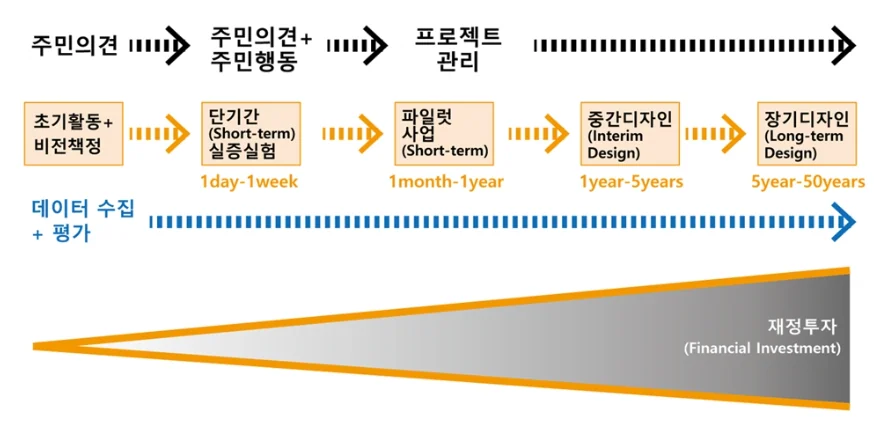 |
이러한 특성 때문에 택티컬 어바니즘 방식은 게릴라 어바니즘(Guerilla Urbanism), 이용자 주도의 계획과 실천이라는 점에서 디아이와이 어바니즘(DIY Urbanism)으로 불린다. 또한 현존하는 도시계획 및 법규를 따르지 않은 허가되지 않은 계획과 실천이라는 점에서 기존 도시계획과 비교하여 비공식적 도시계획(Informal Urbanism)으로 구분하기도 한다.
택티컬 어바니즘의 실천
<사례 추가 –서울 파크렛?, MVRDV 옥상?>
5. 디자인 전략 : 포용적 도시를 위한 초세대 디자인
누구나 차별없이 도시를 이동하고 공간을 누리는 것은 인간으로서 살아가는 데 가장 기본적인 조건이다. 평등과 포용의 가치가 중요해질수록, 고령자 및 장애인 등 이동약자를 고려한 디자인에서 어린이-청소년-성인-노인(Kids-Youth-Adult-Silver)이 세대 간 차별없이 생활할 수 있는 포용적 디자인에 대한 필요성 또한 커지고 있다.
초세대 디자인의 등장 배경
Shifted Spatial Environment Standard
우리 사회의 세대 간 분리 현상은 갈수록 심화되고 있다. 특히 우리나라는 전세계 유래없는 속도로 고령화사회로 진입하고 있는 우리따라 기존 도시는 고령자의 이용이 증가하였고 현상이 발생함에 따라 변화하는 사용자에 맞추어 신속하게 환경을 정비하고 더불어 진보된 공공 환경 스타일 필요
Human-Centered Public Service Method
장애인, 고령자 중심의 공공편의시설 설계방법을 세대 통합적이고 포용적 시각으로 확대하여 포용적 사용자중심의 디자인을 통해 공공서비스컨텐츠의 질적향상을 추구하고 새로운 발전방향제시 필요
Social Environment Infra Value
세대를 배려하는 사회환경시스템의 지원은 고령자 등의 안전사고발생율을 현저하게 감소시켜 간접적인 사회 안전비용을 감소시키고 장애우, 어린이등 다양한 세대간 사용을 촉진시키므로 좀 더 안전하고 역동적인 모습으로 변화시키기 위한 관련 인프라의 개발 필요
초세대 디자인의 개념
초세대 디자인 또는 세대 간 디자인(Trans-Generational Design) 개념은 노인학에 기반한 전문적인 실천 방안으로써 노화에 대응한 산업 디자인 연구에서 시작되었다. 이 개념은 1982년 미국 시러큐스 대학교(Syracuse University)의 산업디자인학과 교수이자 노인학센터(All-University Gerontology Center)의 전 선임연구원인 (James J. Pirkl, 1930~ )에 의해 최초로 제안되었다. 그와 연구팀은 인구 고령화 문제 대응책으로 ‘Industrial design Accommodations : A Transgenerational Perspective’ 프로젝트를 진행하였다. 이 프로젝트에서는 고령화에 따른 노화의 세 가지 측면을 생리적, 사회학적, 심리적으로 정의하고, 디자이너의 책임을 미학적, 기술적, 인본주의적 관점으로 나누었다. 이를 통해 노화의 생리적 측면과 산업 디자인의 휴머니즘적 측면을 결합하여 교육 초점을 설정하고 디자인 지침 등을 마련하는 등 초세대 디자인의 기반을 제공하였다.
초세대 디자인의 개념은 고령사회의 대안으로 대두되었다. 그러나 다양한 구성원의 차별없는 이용에 대한 관심이 높아지며 초세대 디자인 개념은 노인에서 전 세대를 아우르는 디자인 개념으로 확장된다. 장애인 및 교통약자를 배려한 유니버설 디자인에서 나아가 더 넓은 대상과 행태를 포함하여, 전 세대를 고려한 세대 간 디자인이 초세대 디자인이다.
“초세대적 디자인이란, 나이 및 성별 간 차이와 장애유무에 상관없이 보편적이고 통합적으로 사용가능한 제품과 환경을 만드는 디자인 개념이다. 유니버설 디자인(Universal Design)보다 더 넓고 유연하게 포괄적 사용자의 사용성과 신체특성 등을 고려한 디자인이다.”
이러한 초세대 디자인은 유니버설(장애우)과 고령화(노인), 에르고(인체공학-다양한 신체 조건을 가진 어린이~성인)디자인 등 포괄적 분야의 디자인 특성을 통합하는 Post-유니버설 디자인의 새로운 디자인 개념이다. 이는 제품과 시설의 미시적 차원을 넘어 점차 도시와 문화 차원의 디자인 전략으로 확대되고 있다.
디자인 복지 실현 전략으로써의 초세대 디자인 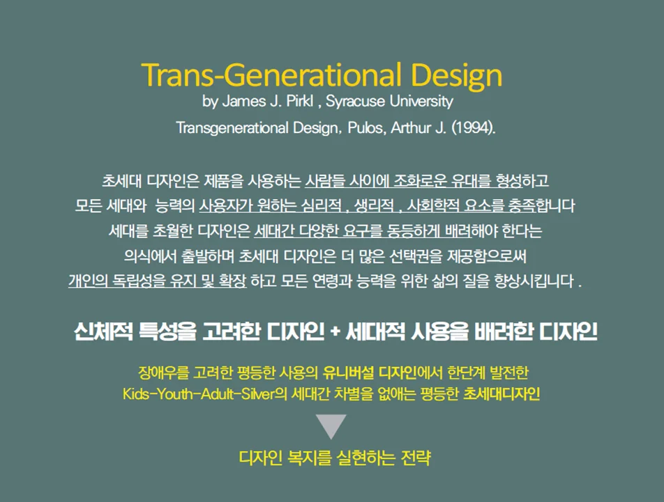 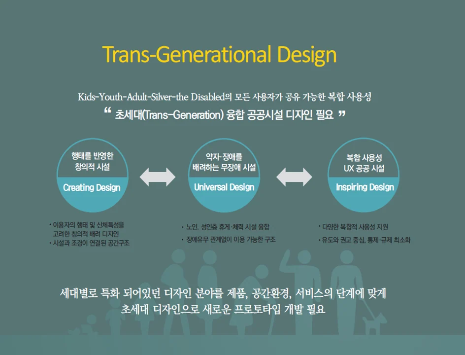 |
초세대 디자인의 7원칙
초세대 디자인의 기본 원칙은 노인이나 장애인을 포함한 모든 사람들이 공공영역에서 평등하게 살 권리가 있다는 것이다. 세대를 초월한 디자인은 사용자 집단 내에서 세대별 연령과 능력에 차별없는 통합적 사용을 지향한다. 이를 위해 세대별로 인간의 신체적 정서적 특징에 의해 제한되는 신체적, 정서적 특징을 포용할 수 있는 제품과 환경을 만든다. 즉, 초세대 디자인은 연령과 성별, 신체조건에 제한받지 않고 동일한 환경에서 살고 일하는 어린이, 젊은이와 노인 모두가 사용할 수 있도록 제품과 환경에 대한 요구를 충족할 수 있어야 한다.
초세대 디자인의 특징은, 시설물 및 제품, 서비스, 공간을 쉽고 자유롭게 이용할 수 있는 사용성, 세대간 감각의 차이를 고려해 정보의 인식도를 높이는 가독성, 세대의 신체적, 정서적 특성에 관계없이 쉽게 접근하고 사용할 수 있는 접근성, 제품 또는 공간 사용 용이성과 적합성에 대한 적응성, 세대별 기능적인 한계에 다양하게 순응하는 호환성 등이다.
이러한 특징을 기반으로, 초세대 디자인 연구기관인 ‘Transgenerational Design Matters’에서는 다음과 같은 초세대 디자인의 7원칙을 제시하고 있다.
1. 안전디자인(safe design) — 디자인된 제품, 공간, 시설 등을 사용할 것으로 예상되는 모든 세대의 다양한 신체적, 감각적 손상을 사전에 예상하여 사용자의 안전을 지원한다.
2. 편안디자인(comfortable design) — 세대를 초월한 디자인은 장애가 있거나 신체가 불편한 사람들이 공간 및 제품을 이용할 때 불편이나 고통 등을 낙인찍는 형태나 상황을 지양하고 신체적, 감각적 편안함을 제공한다.
3. 편의디자인(convenience design) — 디자인된 제품, 공간, 시설 등을 사용하는 모든 세대의 사용자에게 차별 없이 편리한 서비스를 제공한다.
4. 쉬운디자인(easy design) — 초세대 디자인은 우리의 인식을 혼란스럽게 만들지 않으며, 읽기 쉽고 이해할 수 있는 정보 그리고 간단한 조작 방법을 제공한다. 이러한 디자인은 세대별 능력에 관계없이 누구에게나 간단하고 복잡하지 않으며 사용하기 쉽다.
5. 에르고디자인(ergodesign) — 세대별 특징에 따라 기능성과 쾌적성을 높이기 위해, 가능한 넓은 범위의 적절한 인체 치수(체격, 운동, 감각, 인지 등의 모든 기능이나 행동 특성 또는 능력)에 맞도록 물리적 적절함 및 감각을 고려한 인체공학적 디자인을 제공한다.
6. 적합디자인(suitable design) — 세대별 사용자에게 적합한 크기, 적절한 기능, 형태, 변형에 대한 가능성 등을 고려한다.
7. 가치디자인(valuable design) — 제품, 공간, 시설 등에 대한 기대를 긍정적인 반응으로 연결하여 세대별 사용자의 욕구를 만족시킨다. 이를 통해 자존감을 유지와 독립성 확대 등 사용자 가치를 향상한다.
세대를 초월한 디자인은 제품과 제품을 사용하는 사람들 사이에 더 많은 선택권과 접근성을 제공함으로써 개인의 독립성을 유지 및 확장하여 삶의 질을 향상시킨다. 또한 모든 연령과 다양한 신체조건의 사용자가 원하는 심리적, 생리적, 사회학적 요소를 충족함으로써 사회 구성원들의 조화로운 유대를 형성하는 효과가 있다.
초세대 디자인 사례
*사례1. 초세대 융합형 운동 및 놀이공간
이 프로젝트는 도시계획에 의해 만들어진 시설, 바꿔말하면 계획에 의해 결정된 결과와 함께 살아가는 방법으로, 우리가 지금까지 조성한 도시환경을 지속가능하게 바꿔가는 방법이기도 하다. 덴마크 코펜하겐의 Parking House Lüders는 도시의 필수시설인 주차장을 초세대 공간으로 탈바꿈하였다. 주차장 외관을 수직녹화하고, 광장과 옥상을 연결하고, 옥상은 지역주민 모두를 위한 전망대이자 커뮤니티 공간으로 만들었다. 이 공간은 지역 주민과 방문객 누구나 접근가능하며 즐길 수 있는 공간이다. 계단은 광장과 지붕을 대각선으로 연결하며 이용들은 이 외부계단을 통해 언제든 옥상 놀이공간에 접근할 수 있다.
더불어 놀이공간 조성부터 운영, 운동지도까지 지역 휘트니스 센터 전문가가 참여하였다. 이러한 결합을 통해 생활SOC시설에 불과했던 주차건물옥상이 지역의 랜드마크이자 각광받는 커뮤니티 거점으로 재탄생한 것이다.
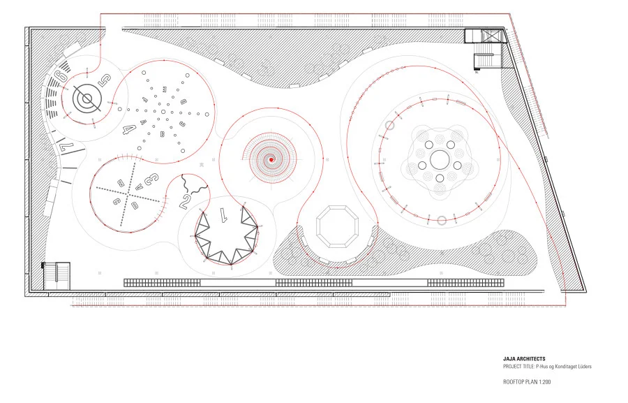 |
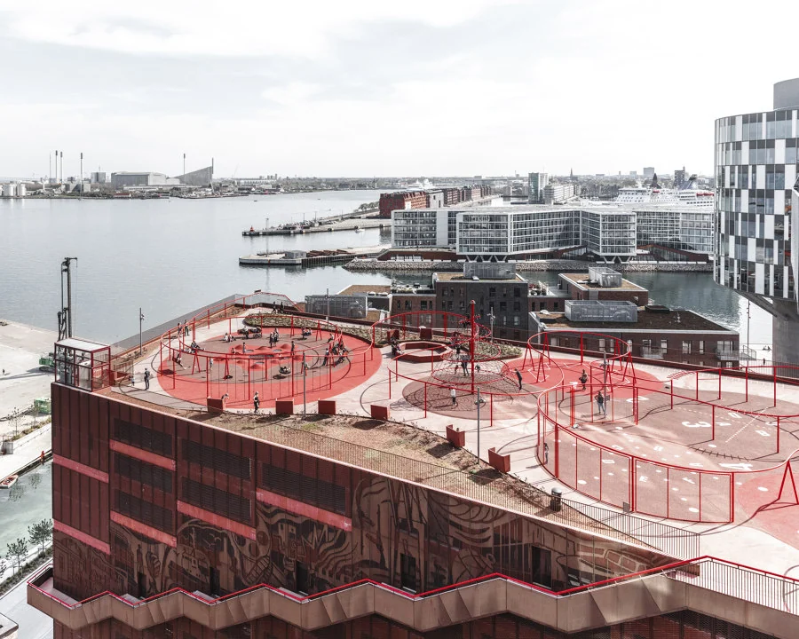 |
||
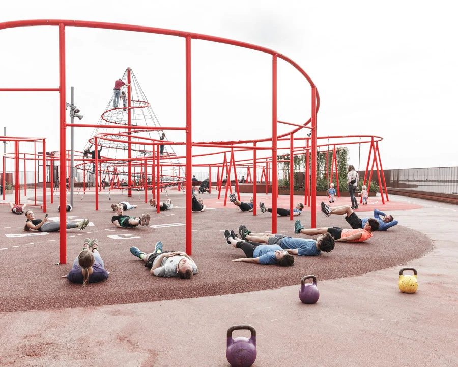 |
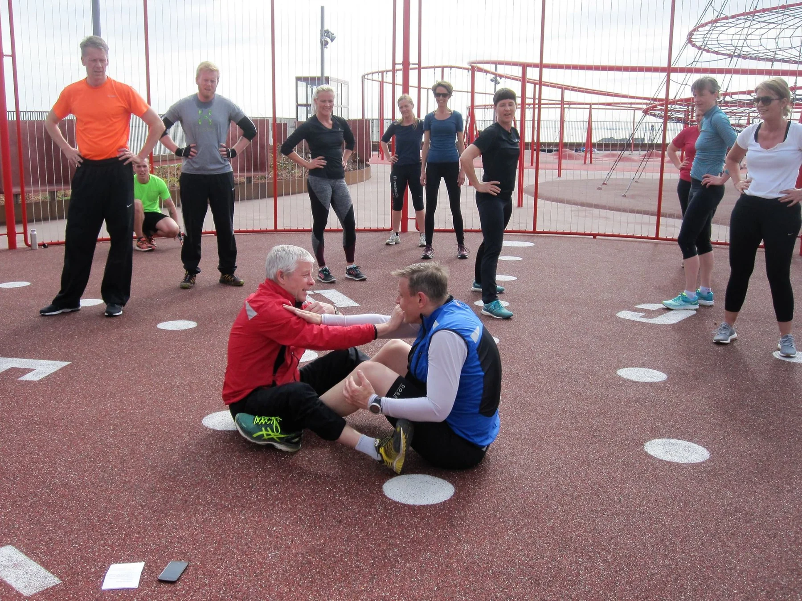 |
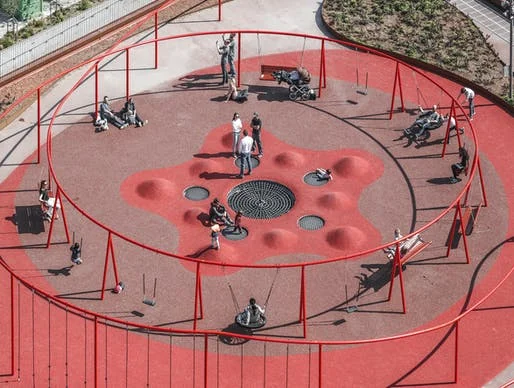 |
|
덴마크 코펜하겐의 Parking House Lüders
* 초세대 복합사용 공공시설물을 조합하여 공간 조성
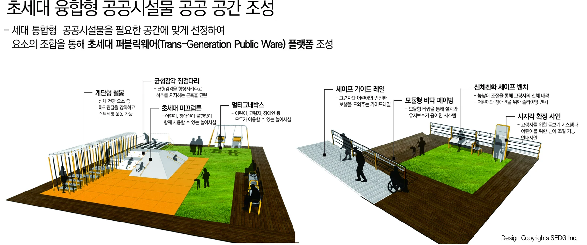
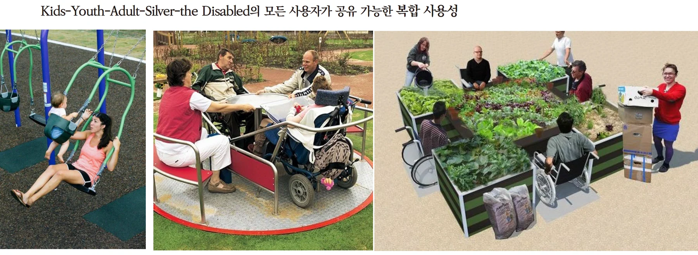
세대별로 특화 되어있던 디자인 분야를 제품, 공간환경, 서비스의 단계에 맞게 초세대 융합 제품군 디자인으로 구성하여 초세대형 놀이터 프로토타입 개발의 사례이다. 이용자의 행태 및 신체특성을 어린이, 노인, 성인층으로 고려한 배려 디자인이며 휴게·체력 시설을 융합하고 시설과 조경이 연결된 공간구조로 이루어져 있다. 장애유무 관계없이 이용 가능한 구조이며 위험을 인지할 수 있는 교육·모험활동을 지원하는 프로그램과 유도와 권고 중심의 놀이미술, 놀이영어, 놀이음악과 같은 공유하며 즐기는 Learning 개념의 공공놀이터 컨텐츠를 포함하고 있다.
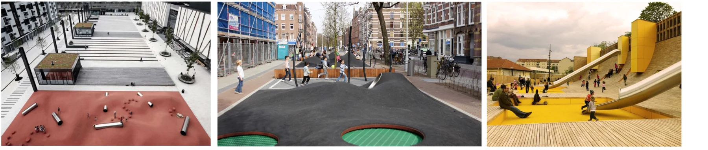
Case2. 초세대형 공공시설물
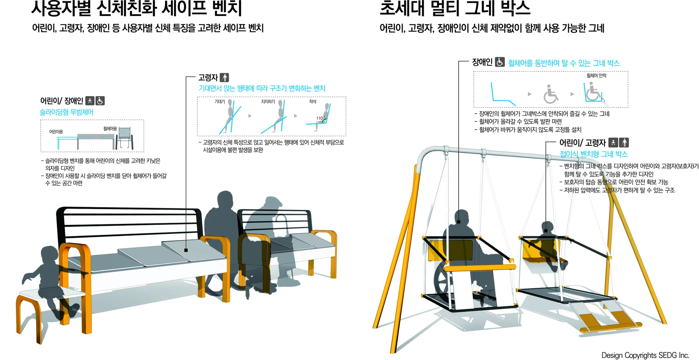
* 어린이, 고령자, 장애인 등 사용자별 신체 특징을 고려한 공공시설물
사용자별 신체친화 세이프 벤치는 세대 사용자별 신체 특징을 고려한 세이프 벤치로 가변적으로 움직일 수 있는 슬라이딩형 무빙체어를 통해 키가 작은 어린이의 높이를 고려, 또한 휠체어를 사용하는 장애인을 위하여 휠체어가 들어갈 수 있는 공간을 마련한 디자인안이다.
앉았다가 일어서거나 반대로 서있다가 앉는 행태를 할때 신체적 부담을 가지는 고령자를 위하여 기대는 행태를 통하여 앉거나 일어설 수 있는 신체보조 벤치를 통하여 시설이용에 발생하는 불편함을 보완해 시설을 이용행태의 과정을 전반적으로 보조하는 시스템이다.
초세대 멀티 그네 박스는 어린이, 고령자, 장애인이 신체 제약없이 함께 사용 가능한 그네 디자인안 이다. 휠체어를 사용하는 장애인을 위하여 휠체어가 그네박스에 안착될 수 있는 구조 및 휠체어가 올라갈 수 있는 발판마련 등 휠체어를 동반하여 탈 수 있는 그네 박스이며 신체능력의 저하로 인하여 압력이 떨이지는 고령자를 위하여 편하게 탈 수 있는 지지구조를 가지고 있다. 주의가 산만하여 안전사고가 자주 일어날 수 있는 어린이를 위하여 보호자가 함께 탑승 할 수 있는 보조공간이 마련되어 있다.
Case3. 초세대 복합사용 프로그램
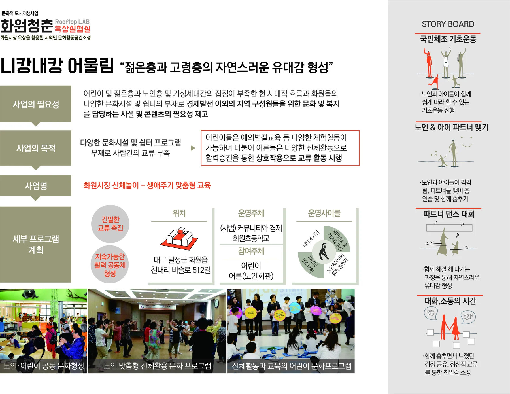
* 전통시장 개선 사업에 있어 초세대 디자인의 적용
니캉내캉 어울림 프로그램은 젊은층과 노인층의 세대간 자연스러운 유대감 형성을 목표로 하고 있는데 어린이 및 젊은층과 노인층 및 기성세대간의 접점이 부족한 현 시대적 흐름과 화원읍의 다양한 문화시설 및 쉼터의 부재로 경제발전 이외의 지역 구성원들을 위한 문화 및 복지를 담당하는 시설 및 콘텐츠의 필요에 부응하고자 한다.
화원초등학교와 노인회관 연계를 통한 다세대 신체놀이 기획은 어린이와 어른(노인)이 함께 신체활동을 할 수 있게 파트너를 선정하여 춤추기, 커플운동 등의 프로그램과 생애주기에 알맞은 신체놀이를 통해 활동적이고 지속가능한 생활문화를 구축해 구성원간 교류 촉진과 지속가능한 공동체 형성을 제공한다.
· 일면식 및 유대관계가 전혀 없었던 기성세대와 신세대의 친밀감 생성
· 세대간 교류특화 생애주기형 체험활동으로 인한 신체적, 정신적 가치 향상
· 외로운 노인의 삶의 질 향상과 어린이의 사회적 유대감 형성
6. 포용도시 디자인을 위한 제언
도시를 위한 디자인은 궁극적으로 인간을 위한 디자인이다. 기능주의적이고 합리주의적인 구조적 세계관에서 인간은 주체라기보다 대상으로서 다루어지기도 했고 디자인은 효율성, 기능성을 중심으로 발전되어 왔으나 이제 디자인은 인간에게 닥친 문제를 다루기 시작한다.
기후위기, 팬데믹, 산업혁명, 사회적 불평등, 환경파괴와 재해 등은 우리 사회가 직면한 문제이다. 모두의 건강, 복지, 안전을 위해서 디자인에서는 다양한 해법을 내놓고 있으며, 팬데믹 이후 다양한 도시 실험들은 시대정신의 변화에 발맞춰 가고자 하는 의지를 보이고 있다. 이러한 상황에서 디자인은 다양한 규모의 사회 및 휴먼 시스템을 다루는 공공가치를 다루는 긍정적인 변화를 가져오고 있다.
포용 도시디자인 원칙 제안
용도가 법과 규제에 의해 명확히 구분된 도시공간에서 다양한 구성원의 요구를 충족하기 위한 포용적 도시공간은 어떻게 만들어져야 할까?
포용적이고 지속가능한 도시를 구축하기 위해, 초세대 디자인 개념을 도시 공간 디자인에 접목해보고자 한다. 고령화나 장애로 인한 신체적 제약, 파편화된 사회로 인한 사회적 고독과 단절 등을 완화하기 위해 세대 간 구분없이 언제 어디서나 접근하고 이용할 수 있는 공간이 필요하다. 이를 위한 도시 디자인을 초세대 도시 디자인이며. 이 개념을 도시에 반영할 때에는 계획-실행-운영관리 등의 모든 프로세스에 광의적으로 해석되어 적용될 필요가 있다.
앞서 Transgenerational Design Matters이 제시한 ‘초세대 디자인의 특징과 디자인 원칙’에 기반하여, 다양한 사회 구성원이 함께 누릴 수 있는 포용적 지속가능 도시를 만들기 위한 여섯 가지 디자인 원칙을 제안해본다.
첫째, 초세대 디자인은 야외 공공공간(오픈스페이스)과 건축물의 접근성 향상을 추구하여야 한다. 위험한 외부공간 규정과 안전한 공공공간 구축 그리고 공공건축, 공간의 용이한 접근성을 추구한다.
둘째, 초세대 디자인은 이동성의 편의를 제공하여야 한다. 사용자 이동 수단의 다양성, 이동 수단의 신뢰성과, 초세대적 모빌리티, 세대 특화 서비스 등을 추구한다.
셋째, 초세대 디자인은 공간 환경 쾌적성을 추구한다. 세대 특성에 맞는 공간환경 관리 체계, 공간환경 유지를 위한 필수 서비스 제공, 무장애 설계 등의 공간 환경 쾌적성을 유지할 수 있는 전략을 제공한다.
넷째, 초세대 디자인은 사회적 거버넌스를 추구한다. 정책제안, 의사결정, 공간 조성 등의 활동과 사회참여에 대한 접근성을 위한 수단과 기회를 마련하고 참여 다양화, 세대동참 전략, 참여시설 확충, 고립방지 프로그램 등을 추구한다.
다섯째, 초세대 디자인은 사회 통합을 추구한다. 세대간 사회적 약자에 대한 참여 강화와 이미지 제고, 세대 융합 프로그램 등을 추구한다.
여섯째, 초세대 디자인은 의사소통 및 정보공유를 추구한다. 세대 융합을 위한 다양한 정보 제공 및 공유, 읽기 쉽고 이해하기 쉬운 정보디자인 등 소통수단의 평등을 추구한다.
포용 도시를 위한 도시디자인 의제
예측할 수 없는 상황 속에서도 포용 도시로의 변화를 주도해나가기 위해서 디자이너들은 보다 능동적이고 실험적인 접근방식을 취해야 하며 디자인을 사회변화를 위한 수단으로 바라보고, 공공가치를 위한 디자인 실험주의적인 변화에 적극 대응할 수 있는 공공영역에서의 디자인 프레임을 구축하여야 한다.
전통적인 디자인을 뛰어넘는 지식과 역량을 구축하고, 연구, 교육 및 서비스 등에서 타 분야와의 협업함으로써 타 분야에서 지식을 생성, 보급, 적용하는 방법과 시민을 참여시키고 의제를 발전시키는 공공디자인으로서의 비전을 구축하여 공공가치를 창출하는 변화를 만들기 위해 과정에 참여할 수 있는 능력과 역량을 가져야 한다.
이를 통해 공공적 언어와 체계를 이해하고, 전문가로서, 참여 시민으로서, 그리고 민주주의의 일원으로서의 책임감을 가지고 지역사회, 공공기관, 시민단체는 물론 커뮤니티까지 다양한 이해 관계자들과 연계를 구축하고, 다음과 같은 포용적 도시디자인 의제를 제안한다.
● 무장애 도시를 위한 공공서비스디자인에 대한 표준 모델
● 어린이와 보행약자를 위한 함께하는 안심거리 표준디자인
● 어린이 사용자 중심형 스쿨존 디자인
● 고령화 사회의 노약자를 위한 생활배려 유니버설디자인
● 다문화, 고령자를 위한 시각공공정보 디자인
● 더위 약자들을 위한 폭염 대비 공공시설물
● 장애인 비장애인 모두가 함께 즐길 수 있는 해수욕장 디자인
● 고령자, 아이들이 함께 지낼 수 있는 골목 공공디자인
● 노인의 인지성 향상을 통한 쾌적하고 안전한 주거환경 디자인
● 안전 인식 개선을 위한 색채 디자인
● 읽기 쉬운 안내사인 디자인
● 어르신 생활건강형 공공 디자인
● 어린이와 어르신이 함께 즐기는 초세대 공공공간 디자인
● 고령자를 위한 인지건강 디자인 서비스
● 시인성 높은 안전 색채를 활용한 재난 대피로 공공디자인
● 모든 사람들의 보행을 편리하게 해주는 턱없는 거리
● 외국인도 읽기 쉬운 안내 표지판 디자인
● 지하철 환승구간 쉽게 찾아갈 수 있는 바닥 유도 사인
● 누구나 즐거운 놀이터 무장애 통합 놀이터
● 다양한 세대가 즐길 수 있는 어르신 놀이터
● 앉고 서기 힘든 어르신들을 위한 잠시 걸터앉는 공공시설물 디자인
● KYAS(Kids+Youth+Adult+Siver 융합) 초세대형 (어린이)놀이터
● 복지시설 어르신 생활 건강 증진 디자인 개발
● 학교 앞 공원 안전하고 재밌는 어린이 틈새공간 디자인
7. 디자인 복지로 실현하는 포용사회
2000년대 이후, 전 세계는 저성장 경제, 저출산, 고령화 등의 사회적 변화를 겪고 있다. 현대도시가 근미래에 맞닥뜨릴 생활방식과 기술의 변화, 기후변화 대응 등에 적합한가에 대한 의문도 제기되고 있다. 더불어 인간의 수명과 도시의 밀도가 함께 증가함에 따라 도시공간도 다양한 요구의 각축장이 되었다.
지속가능한 도시에 대한 논의는, 결국 우리 사회가 직면하고 있는 도시화 자체보다는 어떠한 도시화를 추구할 것인가로 귀결된다. 도시가 공적인 공간으로서 포용적이고, 안전하며, 회복력 있고, 지속가능하게 계획되고 관리될 수 있다면, 도시는 성장과 번영을 위한 도구가 될 수 있다. 제레미 러프킨은 저서 『유러피언 드림』에서 이를 위한 사회로 가는 길을 다음과 같이 제시한다.
“유러피안 드림은 세계적으로 개인의 자유보다 공동체 내의 관계를, 동화보다 문화적 다양성을, 부의 축적보다 삶의 질을, 무제한적 발전보다 환경 보존을 염두에 둔 지속 가능한 개발을, 무자비한 노력보다 온전함을 느낄 수 있는 “심오한 놀이 deep play” [완전한 몰입을 통해 삶의 의미를 깨닫고 희열을 느낄 수 있는 활동]를, 재산권보다 보편적 인권과 자연의 권리를, 일방적 무력보다 다원적 협력을 강조한다.”
-Jeremy Rifkin, 『유러피언 드림』
그의 글을 통해 우리가 꿈꾸는 도시를 엿볼 수 있다. 바람직한 도시는 우리에게 더 많은 기회, 즉 삶의 질을 개선하고 기후변화에 적절히 대웅하며, 지속가능한 미래를 설계할 수 있는 기회를 제공할 수 있을 것이다.
오늘날 국제사회는 도시를 단순히 인간 정주를 위한 물리적 공간으로 보던 것에서 나아가, 도시가 갖는 ‘변혁적 힘(transformative power)’에 주목하고 있다. 이재영의 글을 통해 도시의 지속가능을 위한 변혁적 힘으로서 ‘다양성’과 ‘포용’의 중요한 가치의 중요성을 다시 한 번 살펴볼 수 있다.
“도시의 역사는 그 도시의 성공이 다양성과 개방성 속에서 발전해온 도시들이 그 폐쇄성과 특권성을 요구하는 내부의 요구에 대해 얼마나 잘 응전해나가는가에 달려있다. 폐쇄적 경직성을 보이지 않고, 인종 구성, 문화의 다변화와 같은 도전에 얼마나 잘 응전해나갈 것인가가 미래 도시의 지속가능한 발전을 가늠하게 할 관건이 될 것이다.”
아름다움에 대한 기준과 가치는 변할 수 있다. 그러나 우리는 미래에도 변하지 않을 지속가능한 가치를 위해 디자인해야 한다. 우리는 디자인의 역할이 심미적인 것뿐 아니라 사람을 살리고 사회를 더 나은 방향으로 변화시킬 수 있는 데에 있다고 믿는다.
같이 살아간다
한 사람의 ‘필요’에서 모두의 ‘필요’로
저자소개
이태겸
조경학 박사. 현 ㈜에스이디자인그룹 공공디자인연구소 소장. 한양대학교 공과대학원 조경·생태복원전공 겸임교수. 옛 경관에 내재된 공간 조성 원리와 미래의 사회환경 변화에 대응한 도시 및 오픈스페이스 공간 전략을 탐구하고 실천합니다. 저서로 『고산 윤선도, 서남해안을 경영하다』(2022), 『새로운 미래, 담대한 여정』(2021, 공저) 외 지역계획 및 문화경관 관련 다수의 논저가 있습니다.
이현성
현 홍익대학교 산업미술대학원 공공디자인전공 교수. ㈜에스이디자인그룹 대표.
.이현성 :
기록기반 추가 복구 텍스트 — 위치 대조 필요
Section0/paragraph-0005/record-2061
GHSL-Global Human Settlement Layer. https://ghsl.jrc.ec.europa.eu/index.php. 2022-09-14 검색.
Section0/paragraph-0006/record-2612
e-나라지표. https://www.index.go.kr/potal/main/EachDtlPageDetail.do?idx_cd=1200. 2022-09-14 검색.
Section0/paragraph-0010/record-4637
고명석. 도시에 미학을 입히다. Watch Books. 2015. 200쪽.
Section0/paragraph-0019/record-9543
Gehl, Jan. 『삶이 있는 도시디자인』. 김진우 외 2인(역). 푸른솔. 2003. 61-62쪽; Life Between Buildings. Danish Architectural Press. 1971.
Section0/paragraph-0024/record-11381
21세기를 맞이하며 국제사회는 빈곤 및 질병 퇴치 등을 목표로 한 새천년발전목표(Millennium Development Goals, MDGs)를 발표하였다. MDGs는 괄목할만한 인도적 성과들과 함께 지역 간 불균형, 계층 간 불균형 등의 숙제를 남겼다. 2015년 국제사회는 Post-MDGs에 대한 논의 끝에, 2030년까지 국제사회가 나아가야 할 총 17개 목표와 169개 세부 목표로 구성된 지속가능발전목표(Sustainable Development Goals, SDGs)에 합의하였다.
Section0/paragraph-0027/record-14031
지속가능발전포탈. http://ncsd.go.kr. 2022-09-14 검색.
Section0/paragraph-0030/record-15326
유네스코한국위원회. 『우리의 지속가능한 도시』. 2017. 23쪽.
Section0/paragraph-0033/record-16404
지속가능발전포탈. http://ncsd.go.kr. 2022-09-14 검색.
Section0/paragraph-0035/record-17471
관계부처 합동. 『제 4차 지속가능발전 기본계획 2021-2040』. 2021. 1부. 21쪽.
Section0/paragraph-0039/record-19673
Ahern, Jack. “Urban landscape sustainability and resilience: the promise and challenges of integrating ecology with urban planning and design”. Landscape Ecology. 28. 2012. pp.1203-1212.
Section0/paragraph-0042/record-22323
고명석. 『도시에 미학을 입히다』. Watch Books. 2015. 203쪽.
Section0/paragraph-0044/record-23355
2020 서울디자인국제포럼. 사회문제해결디자인, 디자인을 통한 회복 역량의 강화. https://www.sdif.org/html/ko/view.php?no=28. 2022-09-17. 검색.
Section0/paragraph-0049/record-26075
김정곤 외. 『리질리언스 시티 평가기준 및 도시재생 적용 연구』. LH토지주택연구원. 2017. 17쪽.
Section0/paragraph-0053/record-28211
포용적 성장(inclusive growth)은 세계은행(World Bank)의 ‘성장과 개발 위원회(Commission on Growth and Development)’가 발표한 개념으로, 지속성장과 포용적 개발(Sustained Growth and Inclusive Development)을 위해 ‘시장과 자원에 대한 기회의 평등(equality of opportunity)’에 대한 보고서에서 등장하였다. 경제협력개발기구(OECD)에서도 사회통합의 요소로 사회적 자본(social capital), 사회 이동(social mobility)과 함께 사회적 포용(social inclusion)을 강조하고 있다.
Section0/paragraph-0054/record-29207
우윤석. “포용도시 개념의 다차원적 모색”. LHI Journal. 11(4). 2020. 33쪽.
Section0/paragraph-0056/record-30181
박인권. “포용도시를 향한 도전과 정책과제”. 국토. 제436호. 2017. 20-21쪽.
Section0/paragraph-0058/record-31261
최수신. “포용디자인 포용국가”. 디자인 이슈리포트. 35. 2019. 1쪽.
Section0/paragraph-0062/record-33225
2020 서울디자인국제포럼. 사회문제해결디자인, 디자인을 통한 회복 역량의 강화. https://www.sdif.org/html/ko/view.php?no=28. 2022-09-17. 검색.
Section0/paragraph-0069/record-36988
최수신. “포용디자인 포용국가”. 디자인 이슈리포트. 35. 2019. 1쪽.
Section0/paragraph-0077/record-41724
송준환. “택티컬 어바니즘과 파크렛-고베시 산노미야 고베 파크렛”. 건축사. 583호. 2017. 140쪽.
Section0/paragraph-0080/record-42874
손동필·고영호·윤주선. 『택티컬 어바니즘 기반의 가로활성화 연구』. 서울연구원. 2017. 38쪽.
Section0/paragraph-0084/record-44568
송준환. “택티컬 어바니즘과 파크렛-고베시 산노미야 고베 파크렛”. 건축사. 583호. 2017. 139쪽.
Section0/paragraph-0098/record-49102
Wikipedia. Trans-Generational Design. https://en.wikipedia.org/wiki/Transgenerational_design. 2022-8-13 검색.
Section0/paragraph-0106/record-54626
Pirkl, James J. Transgenerational Design: Products for an Aging Population. New York: Van Nostrand. 1994. p. 25.
Section0/paragraph-0110/record-56942
Transgenerational Design Matters 홈페이지. https://www.transgenerational.org. 2022-08-13 검색.
Section0/paragraph-0122/record-62221
https://www.architonic.com 홈페이지. 2022-09-10. 검색.
Section0/paragraph-0132/record-68241
https://www.architonic.com, https://www.facebook.com/konditagetluders, https://archinect.com. 2021-04-15. 검색
Section0/paragraph-0196/record-90753
Rifkin, Jeremy. 『유러피언 드림』. 이원기(역). 민음사. 2005. 12쪽; The European Dream: How Europe's Vision of the Future Is Quietly Eclipsing the American Dream. 2004.
Section0/paragraph-0199/record-91919
유네스코한국위원회. 『우리의 지속가능한 도시』. 2017. 69-70쪽.
Section0/paragraph-0201/record-92753
이재영. 추후 본 도서 페이지 확정되면 수정
이 글의 판본과 수록 정보 ＋
공동 명의 포함; 판본별 저자 표기·개인별 기여 확인 필요
이태겸·이현성 공동 명의 원고와 이현성 단독 표기의 관련 PDF가 있음. 기여 범위 확인 필요.
- 수록 자료
- 20220917 포용 사회의 도시 디자인_이태겸, 이현성 .hwp
- 자료의 날짜 단서
- 2022-09-17 · 실제 발표일과 다를 수 있습니다.
- 관련 파일
- 3개 / 서로 다른 본문 2종